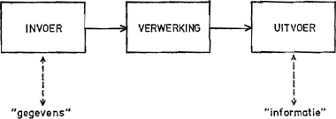

Hier heeft u een filmpje over de werking van de computer.
Filmpje over de werking van een computer
De essentiële onderdelen van een computer:
- Centrale Verwerkingseenheid (CPU), dit voert berekeningen en programma's uit.
- Moederbord, is het hoofdcircuit van de computer waar de CPU,RAM, opslagapparaten en andere
hardwarecomponenten zijn bevestigd
- Geheugen (RAM), RAM staat voor: Random Acces Memory. Het dient als tijdelijke opslag
voor gegevens en programma's die in gebruik zijn.
- Opslagapparaten, Dit omvat harde schijven (HDD) en solid-state drives (SSD) die worden
gebruikt om gegevens op te slaan, zoals het besturingssysteem, programma's, en bestanden.
- Voedingseenheid (PSU), De PSU levert stroom aan de verschillende componenten van de computer.
- Grafische kaart (GPU), Dit is verantwoordelijk voor het verwerken van grafische taken en het
aansturen van het beeldscherm.
- Netwerkkaart, Hiermee kan de computer verbinding maken met een netwerk, zoals Ethernet of Wi-Fi.
- Behuizing, De behuizing of computerkast beschermt de interne componenten en biedt aansluitingen
voor randapparatuur en koelingsmogelijkheden.
INVOER
Invoer in een computer begint met gegevensbronnen, zoals toetsenborden, muizen of andere apparaten.
Deze gegevens worden via invoerapparaten verwerkt en omgezet naar een digitaal formaat.
De computer slaat de gegevens tijdelijk op in een invoerbuffer, verwerkt ze met behulp van de CPU en software
en reageert vervolgens met acties op basis van de verwerkte invoer.
VERWERKING
Computerverwerking omvat het ophalen van instructies en gegevens uit het geheugen, het decoderen en uitvoeren van
deze instructies door de CPU, het opslaan van resultaten en interactie met invoer- en uitvoerapparaten.
Dit proces wordt herhaald om complexe taken uit te voeren en wordt beheerd door het besturingssysteem en softwareprogramma's.
Het vormt het hart van de computer functionaliteit.
UITVOER
Het uitvoerproces van een computer omvat het genereren van resultaten na verwerking, het verzenden van die resultaten
naar geschikte uitvoerapparaten en het presenteren van informatie aan de gebruiker via beeldschermen, luidsprekers, printers of andere uitvoerapparaten.
Dit stelt gebruikers in staat om met de computer te communiceren en resultaten te waarnemen.

OPSLAG
Opslag in een computer omvat het bewaren van gegevens en bestanden op interne opslagapparaten zoals harde schijven of SSD's.
Gegevens worden ingevoerd, verwerkt en beheerd door het besturingssysteem en software en kunnen worden geopend en bewerkt door gebruikers via softwaretoepassingen.